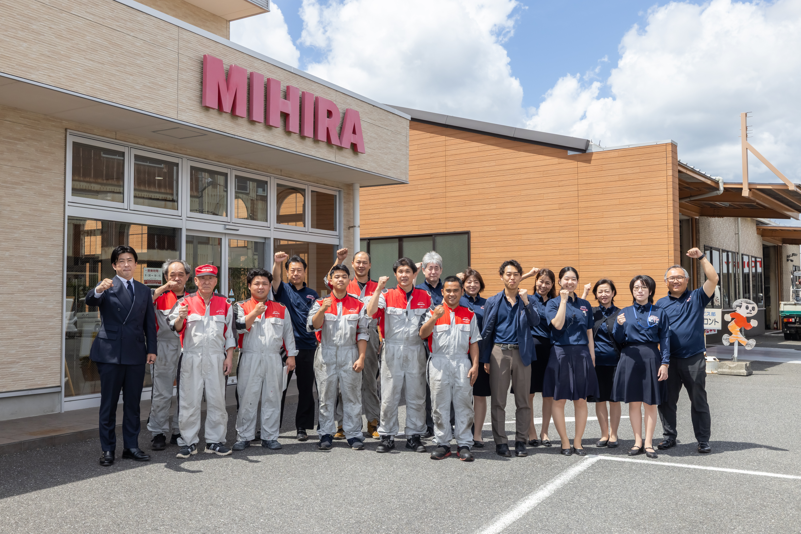
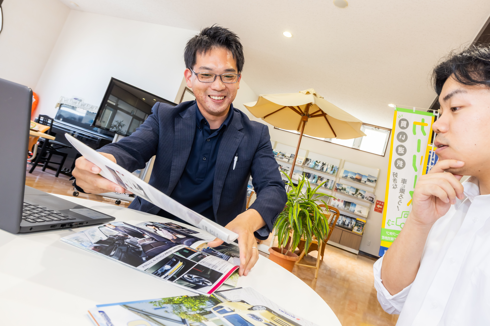
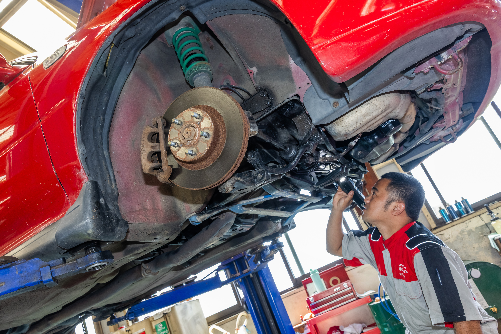
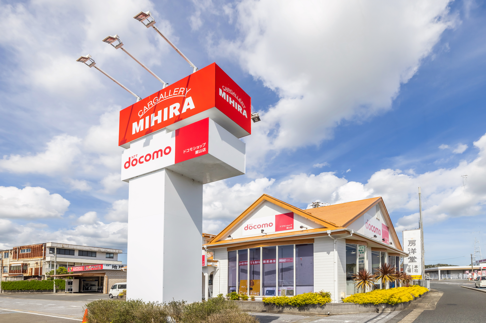
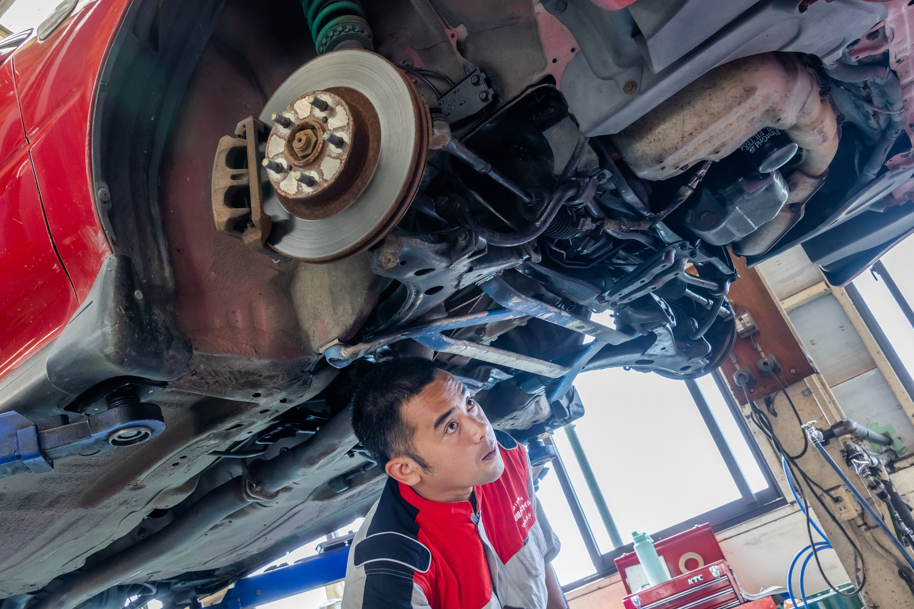
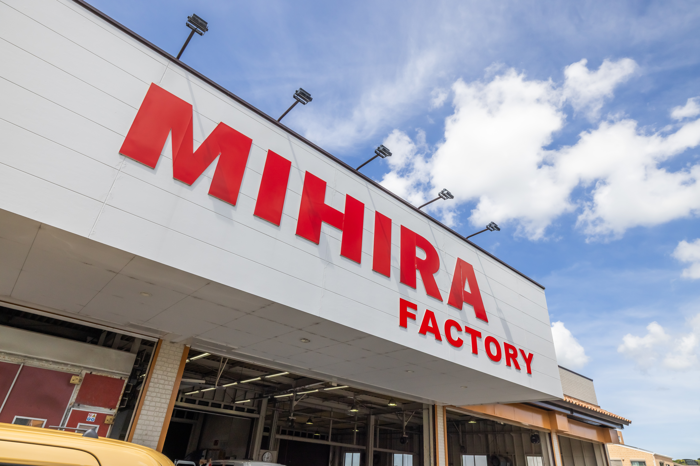
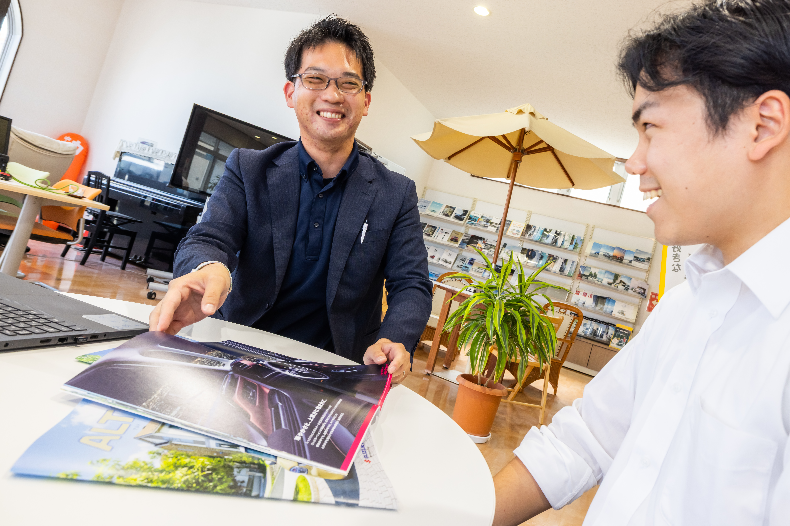

会社全体

ABOUT MIHIRA
5分でわかる
三平商会。
数字、事業、働く環境、そして人。
三平商会のことを、5つのPOINTでご紹介します。
05MIN.
新車・中古車販売、車検・整備・修理、自動車保険、NTTドコモショップ運営。
三平商会は、南房総エリアでクルマと通信を通して地域の暮らしを支えています。
対応エリア：館山・鴨川・南房総・鋸南・富津
POINT.01
DATA
データで見る三平商会
多くの日で18:30頃に退社
資格取得費用は全額会社負担
国産車・輸入車・旧車・トラックまで対応
予約制で計画的に作業
※「○」は現在確認中の項目です。情報確定後に差し替えます。
POINT.02
COMPANY
地域の暮らしを支える、4つの事業。

01CAR SALES
新車・中古車販売
お客様の暮らしに合った一台を提案し、購入後まで長くサポートします。

02MAINTENANCE
車検・整備・修理
日常のメンテナンスから車検、故障診断まで。地域の移動を技術で守ります。
03INSURANCE
自動車保険
もしもの時まで見据えて、お客様のカーライフに安心をプラスします。

04MOBILE
NTTドコモショップ運営
スマートフォンや通信の相談を通じて、地域の毎日をもっと便利にします。
AREA南房総エリアに密着
館山 / 鴨川 / 南房総 / 鋸南 / 富津
POINT.03
WORK
幅広い仕事が、成長の幅になる。

MECHANIC FIELD
車検から重整備、
車検から重整備、
故障診断まで。
整備部門では、車検整備だけでなく、エンジン・足回り・電装系の重整備、コンピュータを使った故障診断まで幅広い技術に触れられます。
- 陸運局指定民間車検工場
- 国産車・輸入車・旧車・トラックまで対応
- 工場規模 約3,000坪
MONTHLY INCOMING400〜500台
毎月の入庫台数
VEHICLE INSPECTION110台
月間の車検台数
12-MONTH INSPECTION40〜50台
月間12か月点検
GENERAL REPAIR250〜350台
月間一般整備
POINT.04
ENVIRONMENT
技術を磨きながら、生活も大切に。
休憩75分。多くの日で18:30頃の退社が基本です。
残業を抑えながら、技術を磨ける働き方を目指しています。
働きながら資格取得を目指せる環境です。
工賃目標の超過分から10％を還元する制度があります。

HOW WE WORK
予約制だから、
予約制だから、
突発対応に追われにくい。
整備部門は予約制を基本とし、緊急対応に追われるのではなく、予定を立てながら仕事を進めやすい環境です。
6割
軽自動車4割
リース車両
軽自動車4割
リース車両
POINT.05
どんな人と働くのか。
PEOPLE
どんな人と働くのか。
先輩の声を少しだけ。
INTERVIEW 01 / MECHANIC
卒業から34年。
卒業から34年。
今も目指すのは、
“頼られる整備士”。
整備士 K・Yさん
Q
三平商会への入社を決めた理由は？
さまざまなメーカーの車に関われること、そしてロードサービスについても学べることに魅力を感じました。高校卒業後の入社で知識はほとんどありませんでしたが、働きながら幅広い経験を積める環境だと思いました。
Q
このインタビューをもっと読む →
仕事のやりがいは？
路上で困っているお客様を対応した際、何年経っても声をかけていただけたことが印象に残っています。誰かが困っているときに力になれることは、整備士ならではのやりがいです。

INTERVIEW 04 / SALES
知識ゼロから、
知識ゼロから、
お客様に頼られる
営業へ。
営業 T・Yさん
Q
入社前に不安だったことは？
車の知識だけでなく保険についてもほとんど知らなかったため、最初は覚えられるか不安でした。実際は先輩方が丁寧に教えてくださり、分からないこともすぐフォローしてくれました。
Q
このインタビューをもっと読む →
仕事のやりがいは？
お客様のアフターフォローをした際に「ありがとう」と喜んでいただけたときです。以前は分からなかったことにも答えられるようになり、自分の成長を実感できます。
KNOW MORE ABOUT MIHIRA